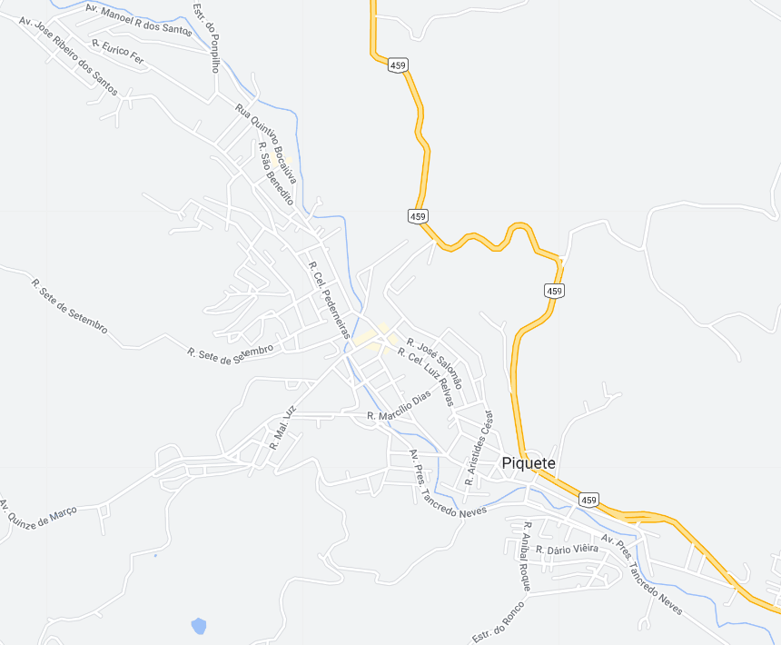

Piquete - Geodex

Município de Piquete
-
Populacão: 13.495 pessoas
-
Área: 175,996km²
-
Fundação: 22 de Agosto de 1889
-
Distância da Capital: 207km
Piquete, situada no estado de São Paulo, é uma cidade com uma história marcante e um ambiente acolhedor. Fundada em 22 de agosto de 1889, a cidade teve origem como um pequeno povoado que se desenvolveu em torno da estação ferroviária de Piquete, importante ponto de parada da Estrada de Ferro Central do Brasil. Ao longo dos anos, Piquete se consolidou como um centro econômico da região, com destaque para a indústria e agricultura. A cidade preserva seu patrimônio histórico, com construções antigas e monumentos que refletem seu passado. Além disso, Piquete é privilegiada por sua natureza exuberante, com montanhas, rios e trilhas, proporcionando opções para atividades ao ar livre e turismo ecológico. Com uma população hospitaleira e um forte senso de comunidade, Piquete continua a crescer e se desenvolver, mantendo suas tradições e buscando um futuro próspero.